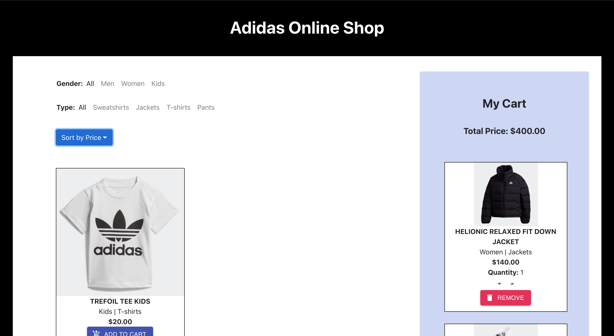

DEVELOPMENT
Adidas Online Shopping Application

Website Link & GitHub Repo
Goals & Values
One of the main goals of the application is to show various options for the clothing products from Adidas and allow the users to shop for clothes easily. Specifically, the website conveniently displays products that match each user’s needs/interests by applying filters based on two different categories, including "Gender" (All / Men / Women) and "Type" (All / Sweatshirts / Jackets / T-shirts / Pants), as well as sorting the products based on "Price" (Lowest to Highest / Highest to Lowest). This will reduce the amount of time and effort the user ends up wasting by trying to search for wanted items through an unfiltered, unsorted list of numerous items. The difficulty increases with an increasing number of products presented by the website.Also, the application allows the users to store items they are interested in inside the cart. This can easily be done through the "Add to Cart," "Remove from Cart," "Add Quantity," and "Subtract Quantity" buttons. "Add to Cart" is present for each item on the product options secton of the website, which shows the filtered and sorted products, and the other three are present for each item added to the cart. If an item to be added does not already exist in the cart, it is newly added with a default quantity of 1. If it already exists, the quantity of the product is increased by 1 every time "Add to Cart" is clicked. Similarly, once in the cart, a product can be removed altogether through the "Remove from Cart" button, and the quantity of a product can be increased by 1 every time the "Add Quantity" (shown as up arrow) button is clicked, and decreased by 1 every time the "Subtract Quantity" (shown as down arrow) button is clicked. This allows the users to easily manage their cart.
The overall goal of the website is to give the users the best experience possible in shopping for clothes by making the interface as convenient, easy to use, and intuitive as possible.
Usability Principles
The "My Cart" section indicating the user's customizable cart is placed right adjacent to the product options section. This allows the users to see both the product section and the cart at one sight, without having to scroll down unnecessarily to the very bottom of the product section or navigate to a completely different page to review their cart. The users can also quickly remember what has been put inside their cart in case they forget and compare those in the cart with other products in the product section. This can therefore make the users' online shopping experience effective and effortless and minimize the number of clicks necessary to navigate through different components of the website.The proximity of the "My Cart" section from the starting page is also deeply connect with Fitts's law, which states that the amount of time required for a person to move a pointer to a target area is a function of the distance to the target divided by the size of the target. In other words, the shorter the distance and the greater the target’s size, the quicker it takes to reach it. Thus, since the users will most likely be using their mouse cursors as their location input source, they can easily reach the cart because it is placed as closely as possible to the center of the starting page, or to the center of the screen.
Also, the navigation bars for the filters and the dropdown button for the sorting options are chosen to be on top of the product options section to make the functionalities easily detectable by the users, so they can benefit from them.
The website also displays each product in its own box surrounded by a thin black border. This is to minimize the potential confusion about which product a button belongs to and make the products clearly distinguishable from each other, as we are treating all pieces of information about one product as one entity.
All of the components of the website are made to be straightforward and intuitive. It is so that no user will be confused about what a certain functionality achieves or how to utilize a certain feature. All of the buttons, navigation bars, dropdown, and sections have clear labels that are easily detectable (e.g. through contrasting color from the background for emphasis and visibility), and all components are self-explanatory. Also, the colors used for the website match well with each other and present great contrast for emphasis among different components of the website.
Architecture of React App
This "Adidas Online Shopping" app is built mainly from three different files: App.js, FilteredList.js, DisplayList.js.When App is called, the React app is started. Inside it, we initialize the list of product items, each of which is defined by id, name, gender, type, price, and image. The list is then passed into the FilteredList component as props.
FilteredList is a component that uses this list and constructs the content portion of the website, including the navbars for filters, the dropdown for sorting options, the product options section, and the cart section. Specifically, it performs filtering based on "Gender" and "Type" and sorting based on "Price" to only display matching products. When a user switches to a different option for any of the filters or the sort method, the corresponding implemented onSelect method is called to cause the state change (on gender, type, or sort).
Aggregator functionality is implemented in this class as well to calculate the total price of the products in the cart. "Add to Cart," "Remove from Cart," "Add Quantity," and "Subtract Quantity" functions are built. The total price in the cart is calculated in this class as well, using the state cart dictionary.
When DisplayList is called inside FilteredList to get the product display (for either the products options or the cart), the four aforementioned call-back functions are passed as well as the list of product options or the cart dictionary, and whether it is a cart. This boolean is needed because the info display for a product have different buttons for the product options and the cart. Also, the four call-back functions are used to trigger state changes when the user clicks on any of the four buttons ("Add to Cart," "Remove from Cart," "Add Quantity," and "Subtract Quantity"), which calls the corresponding onClick function that calls the call-back function, which traces back to FilteredList to cause a state change in that class (on the cart dictionary).